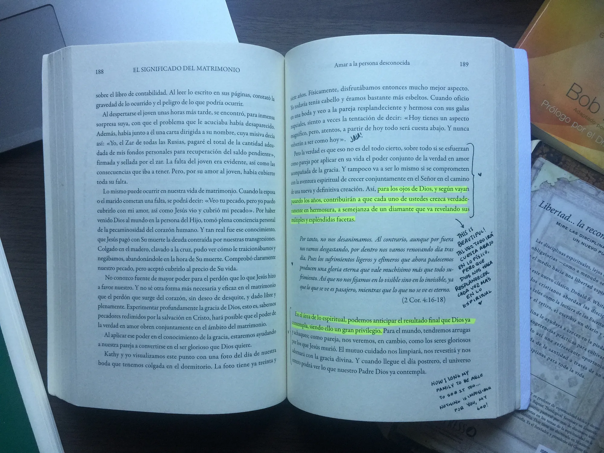

Para donarlos, es importante que estén en buen estado de conservación en general.
Esto significa que la
cubierta
debe estar intacta, sin roturas ni desgastes significativos, libre de humedad y moho.
Las páginas internas deben estar limpias, sin manchas, y el texto debe ser claramente legible.
Además, no deben tener dobleces, subrayados ni anotaciones en las páginas.
